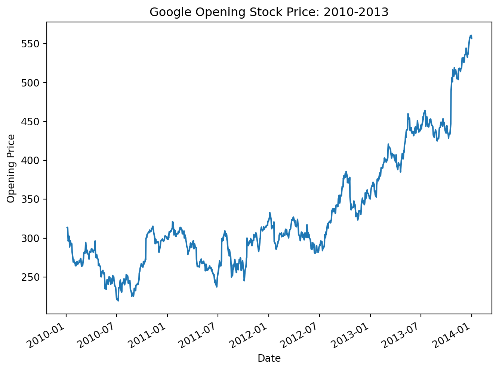
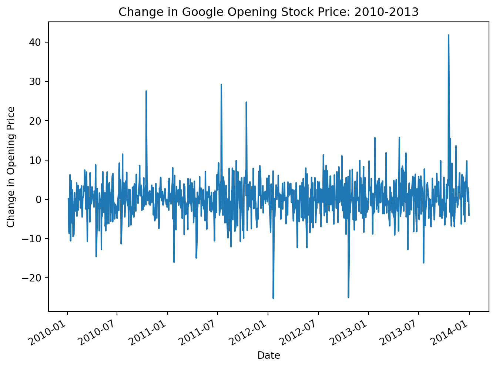

How to make a non-stationary time series stationary
Published
October 30, 2026
ARMA models require a stationary time series in order to work properly. If you are unfamiliar with the concept of stationarity, I encourage you to check out this article before moving forward.
If you determine that your time series is non-stationary - whether through visualization, statistical tests, or both - and you intend to build an auto-regression and/or moving average model (ARMA), you will need to make your data stationary. How can this be done? Through a simple process called differencing.
In this article we will explore what differencing is, how it can usually make a nonstationary time series stationary, and then walk through an easy way to perform differencing in Python.
What is Differencing?
Differencing, very simply, means calculating the change (i.e. the difference) between instances within your time series.
For example, if your time series was (0, 3, 2, 5, 5, 1, 7), then the differenced time series would be (3, -1, 3, 0, -4, 6), the difference between each “hop”. Think, “up 3”, “down 1”, “up 3”, “stay the same”, “down 4”, and “up 6”.
Differencing can be done at other intervals than just from each successive instance. Seasonal differencing is an example of this, where you calculate the difference between each successive seasonal instance. For example, you might calculate the difference between January 2025 and January 2026, February 2025 and February 2026, March 2025 and March 2026, etc. for monthly seasonal data.
In its simplest form though, differencing just implies taking the change between each successive instance. In essence, you are just converting your original time series of values into a time series of the change between values.
How does Differencing Work?
Interestingly, the change from instance to instance is often (though not always) relatively stable in mean and variance, even if the underlying time series is quite unstable.
Occasionally, you may need to difference your time series data more than once to achieve stationarity. If you find yourself differencing more than 2-3 times, however, you may need to consider other methods of working with your time series.
Differencing in Python
Consider the following example of the Google daily opening stock price from 2010-2013.
If we just plot the daily stock price in its original form, we will see strong evidence of non-stationarity. The data set has a clear upward trend, which would indicate a mean that is not constant across the time series.
#Necessary importsimport pandas as pdimport matplotlib.pyplot as plt#Load Google stock datastock_prices = pd.read_csv(r"C:\Users\Joel\Downloads\GOOGL.csv")#Prepare data for visualizationstock_prices['Date'] = pd.to_datetime(stock_prices['Date'])stock_prices = stock_prices.set_index('Date')stock_prices = stock_prices.rename(columns={'Open': 'Google Stock Price'})y = stock_prices['Google Stock Price']#Filter to just 2010-2013y = y['2010-01-01':'2013-12-31']y.plot(figsize=(8, 6), legend=None)plt.title('Google Opening Stock Price: 2010-2013')plt.ylabel('Opening Price')plt.show();

Now, let’s use Pandas .diff() method to difference our data set. For more information about the .diff() method, check out the Pandas documentation on the subject here.
In the case of this daily data, without any clear seasonality, we will just difference by 1. This means we are taking the change in the Google stock price from day to day. We will then plot this differenced data to see if we were able to successfully make our time series stationary.
Note, when you use the .diff() method, you will introduce at least 1 null value into your time series. This is due to the first instance not having a preceding instance to compare against. Therefore, you will typically want to use .dropna() along with this method to remove the null value.
y_diff = y.diff(1).dropna() #Differencing by 1, dropping the resulting null valuey_diff.plot(figsize=(8, 6), legend=None)plt.title('Change in Google Opening Stock Price: 2010-2013')plt.ylabel('Change in Opening Price')plt.show();

In this plot of the differenced Google stock price data, we should immediately note that the trend that was so apparent in the previous plot (the undifferenced data) has disappeared. In addition, we see what appears to be fairly consistent mean and variance across this differenced data set. All of this gives us reason to believe we now have a stationary time series.
To give us some additional confidence, let’s run our data through the Augmented Dickey-Fuller test. We will compare the p-values before and after differencing to see how we did.
from statsmodels.tsa.stattools import adfulleradfuller_results_nondiff = adfuller(y)adfuller_results_diff = adfuller(y_diff)print('ADFuller P-Value Before Differencing:', round(adfuller_results_nondiff[1], 4))print('ADFuller P-Value After Differencing:', adfuller_results_diff[1])
ADFuller P-Value Before Differencing: 0.994
ADFuller P-Value After Differencing: 0.0
Our adfuller p-value prior to differencing was .994 - much higher than the critical value of 0.05. This reinforces what we saw in the first visualization - we were dealing with a non-stationary time series.
After differencing, the adfuller p-value is reported at 0.0. This indicates that we have successfully made our time series stationary. This would allow us to proceed with using something like an AR and/or MA model with the differenced data set.
Conclusion
Differencing is a simple process that can generally be used to make a non-stationary time series stationary. We can difference our time series data using Pandas .diff() function. This is an important step in preparing your data for use in a statistical model like ARIMA.
The Google Stock Price data set used in this article was sourced from https://www.kaggle.com/datasets/varpit94/google-stock-data